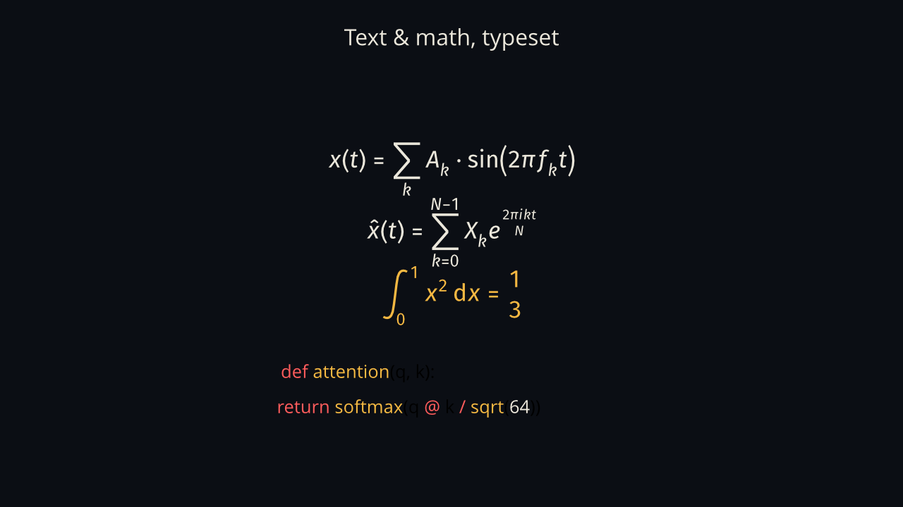

Animatix · the language
Every capability of .amx, one short section
at a time. Each figure is a live scene compiling in your browser as you
read (WebGPU), with the code that drives it beside it. And every live
figure is editable: flip one open, change the code,
and the engine rebuilds the scene in place — the diagnostics it reports
are the same ones the LSP shows.
A scene is a list of actors — one per line, a type and
properties — and a list of keyframes. A keyframe stamp
(#1.6s) starts a beat; assignments animated
with a [duration] interpolate from the
previous beat. Relative stamps (#+1s)
chain off the last beat.
box: Rect, size: (140, 140), color: accent.primary, at: (400, 440) #1.6s box.at = (640, 440) [900ms, ease: ease-in-out] #2.9s box.size = (210, 90) [700ms, ease: ease-out]
ease: bounce.
scenes/syntax.amx ↗
Choreography blocks compose actions: stagger
overlaps a group on a delay curve, sequence
runs it back to back. Every animated assignment takes a named ease —
or an easing function when you outgrow the names. And the
cast itself is generated: one Row
container plus a compile-time for over an
array of colors, instead of five copied lines.
row: Row, anchor: scene.center, gap: 44, align: "center" { for color, i in {accent.primary, accent.success, …} { square[i]: Rect, size: (70, 70), color: color } } #0.5s stagger [120ms] { fade-in square[0] [500ms, ease: ease-out] … four more … } #5s square[4].color = accent.danger [600ms, ease: bounce]
Common verbs are built in — shift,
rotate, scale,
shake, pulse —
so the choreography of an explanation is one line per move. Entrances
and exits (fade-in,
draw-in, wipe-in,
reveal-in and their -out
twins) gate opacity, strokes and fills.
#1.5s shift actor [by: (180, 0), 800ms, ease: ease-in-out] #2.5s rotate actor [by: deg(90), 800ms, ease: ease-in-out] #3.5s scale actor [by: 1.4, 800ms, ease: bounce]
always orbit — see
§08.
scenes/actions.amx ↗
Re-declaring an actor at a later keyframe morphs it — shape to shape,
with strategies: auto,
match (match by vertex),
fade, or a path_arc
hint for the travel, plus stretch for
normalization. Paths morph through their control points.
#2s circle: Rect, size: (140, 140), color: accent.danger [1s, strategy: auto] #5s poly: Polygon, points: {(0, -80), (20, -25), … ten-point star …} [1.5s, path_arc: 0.3]
Effects are declared as labelled children of a
Filter scope and run in application order;
their parameters are ordinary properties, so they keyframe
like everything else. Thirteen ship built in —
Blur, ColorGrade,
Vignette, MotionBlur,
DropShadow… — each a small WGSL program.
panel: Filter, anchor: scene.center { soft: Blur, radius: 0 grade: ColorGrade, brightness: 0.6 vig: Vignette, amount: 0, radius: 0.55, softness: 0.7 art: Group, anchor: scene.center { …the framed content… } } #1.8s panel.soft.radius = 14 [1.2s, ease: ease-out]
shake/pulse on the chip.
scenes/effects.amx ↗
A Typst-powered text compiler handles the typography:
Typst renders markup and math,
Code highlights source in several languages
with colorscheme-following token colors, Equation/
Fragment expose per-fragment reveals, and
Svg/Image drop
vector and raster assets straight into the scene.
eq1: Typst, text: "$ x(t) = sum_(k) A_k dot sin(2 pi f_k t) $", font_size: 30, color: text.primary, anchor: scene.center code1: Code, code: "def attention(q, k):", language: "python", font_size: 26

image command —
the same scene plays live on a desktop.
scenes/textmath.amx ↗
The plot family is native:
Graph hosts curves in data coordinates,
PlotCurve is cartesian, polar, parametric
or implicit, and VectorField,
Heatmap, ContourSet,
BarChart and NumberPlane
cover the rest. A graph.map(x, y) call
converts data space to screen space at frame time.
main: Graph, x_domain: (-6, 6), y_domain: (-3, 3), size: (640, 420) { sine: PlotCurve, kind: "cartesian", func: (x) => sin(x), color: accent.primary, stroke_width: 3, stroke_progress: 0 } #1.8s sine.stroke_progress = 1.0 [2.4s, ease: ease-in-out]
stroke_progress; a gradient field fades
in beside it.
scenes/plots.amx ↗
Beyond keyframes, an always block
re-evaluates every frame — orbits, generators, simulations — with the
full expression language: closures, match,
lists, string and math builtins. Queries like
is_animating(&prop) let actors react to
the keyframe clock itself.
always { cross_h.at = ring.at dot.at = ring.at if !is_animating(&ring.at) { let p = 0.5 + 0.5 * sin(t * 3) ring.color = accent.success ring.size = (50 - p * 10, 50 - p * 10) status.text = "IDLE — at rest" } else { ring.color = accent.primary status.text = "TRACKING — keyframe active" } }
pub component declares a reusable actor
with typed parameters and @slot markers;
import brings modules in, with
as namespaces and pub let
exports. The figure's chips are instances of one
LabeledBox component from the shared
example library.
import "../lib/components.amx" row: Row, anchor: scene.center, gap: 28, align: "center" { c1: LabeledBox, label: "Query", width: 180 c2: LabeledBox, label: "Key", width: 150 c3: LabeledBox, label: "Value", width: 170 }
shift.
scenes/components.amx ↗
One file can hold several # Scenes joined
by play — and the cut is a GPU transition
(fade, four wipes, cut), with actors able to persist across scenes.
Around the language sits real tooling: a formatter, a checker with
named diagnostics, an analyzer and LSP server, and exports from PNG to
4K MP4.
play Diagram [fade, 450ms] // …later… play Outro [wipe-left, 450ms]
# check a scene for named diagnostics (never-revealed, duplicate-label, …) animatix check scene.amx # format, lint, and inspect the timeline the compiler built animatix fmt scene.amx animatix lint scene.amx animatix timeline scene.amx # export a frame — or a film with the video feature animatix image scene.amx --time 2.0 -o frame.png animatix video scene.amx --export-preset 1080p60 -o film.mp4
The full language specification covers everything this tour sketches — types and strict mode, colorschemes, plugin ABI, and the formatter's rules.